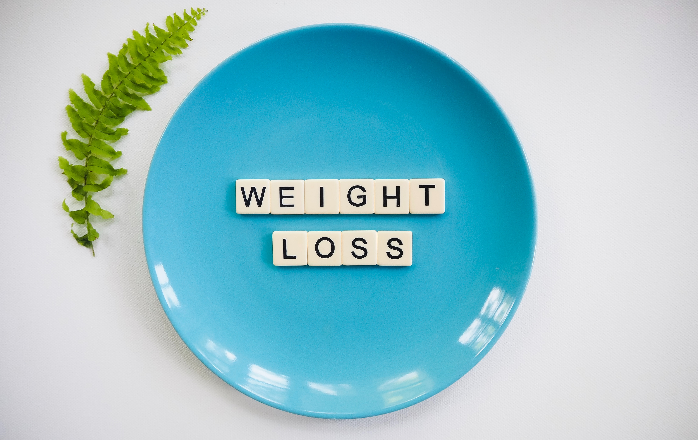

O primeiro benefício que podemos citar do jejum é a restrição calórica (diminuição da quantidade de calorias que você consome durante o dia). Essa restrição tem efeitos diretos no envelhecimento saudável e na expectativa de vida. Isso porque além de levar ao emagrecimento, diminui a produção de radicais livres, compostos altamente inflamatórios.
Melhora do controle da glicose, aumento da nossa resistência em situações de estresse (físico e psicológico).

E como isso acontece? É como se no jejum ocorresse uma “faxina” no nosso organismo: as células defeituosas são destruídas, e os órgãos do trato digestivo tem um “descanso” e conseguem ter um sossego e se recuperar das agressões as quais nos submetemos constantemente, o pâncreas tem um descanso e não produ